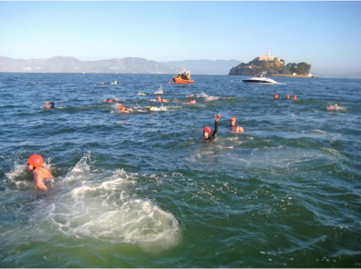

Swim

Swimmers are in for a real treat. You get to swim from S.F. Pier 41 all the way to Alcatraz Island! We will have boats ferrying your supporters and watching out for any swimmer in distress. Those waters can get mighty choppy but we believe you're up for the challenge! Other famous people that have completed this swim are Frank Morris, John Anglin, Clarence Anglin, and Allen West (at least we think so...).
